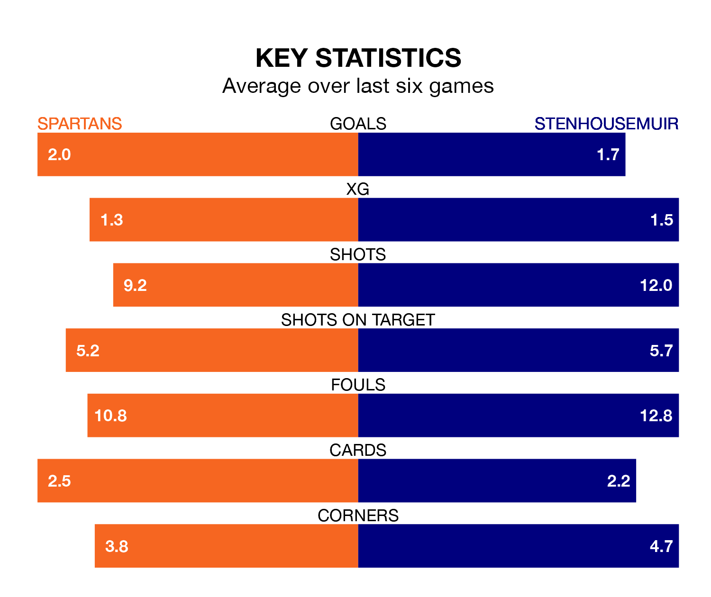

Two of League Two's top sides face each other at the Ainslie Park Stadium in Saturday's kick-off, when third-placed Spartans host table-topping Stenhousemuir.
Spartans have picked up nine wins and five draws from 17 games so far this season, and sit 14 points below the visitors going into the 3pm match.
The Warriors, meanwhile, have won 14 and drawn four of 19, picking up 46 points.
With 35 goals in 19 games so far this season, Stenhousemuir are the league's highest scorers with 1.8 goals per game. And they are conceding fewer than average, letting in 13 goals at a rate of 0.7 per game.
Spartans are also above average scorers, with 1.8 goals per game, compared to a league average of 1.4. They have conceded 1.1 goals per game.
The Spartans are in reasonable form in League Two, with four wins and two losses from their last six games.
With six wins and no losses over that period, the Warriors's form is much better – they have taken 18 points from 18, compared to the home team's 12.
In Matthew Aitken, the visitors have the league's most on-form striker so far this season. He has notched 12 goals in 19 appearances.
His goal rate of one every 131 minutes is quicker than that of Blair Henderson, Spartans's top scorer with a goal every 165 minutes, and a total of nine goals in 17 games.
Spartans's last match was on January 6, a 1-0 win against Peterhead, with Henderson getting the goal for the Spartans.
Stenhousemuir beat Forfar Athletic 2-1 last time out, also on January 6, with Gregor Buchanan and Nicky Jamieson on the scoresheet.
Updated: 10:50, 10/01/24